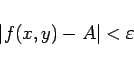

Inhalt Index DeskTop Bronstein

 Funktionen und ihre Darstellung Funktionen von mehreren Veränderlichen Grenzwerte
Funktionen und ihre Darstellung Funktionen von mehreren Veränderlichen Grenzwerte


Eine Funktion von zwei Veränderlichen u=f(x,y) besitzt einen Grenzwert wenn sich nach Vorgabe einer beliebig kleinen positiven Zahl  eine zweite positive Zahl
eine zweite positive Zahl  angeben läßt, so daß gilt
angeben läßt, so daß gilt
|  | (2.277a) |
für alle Punkte (x,y) des Quadrates
| (2.277b) |